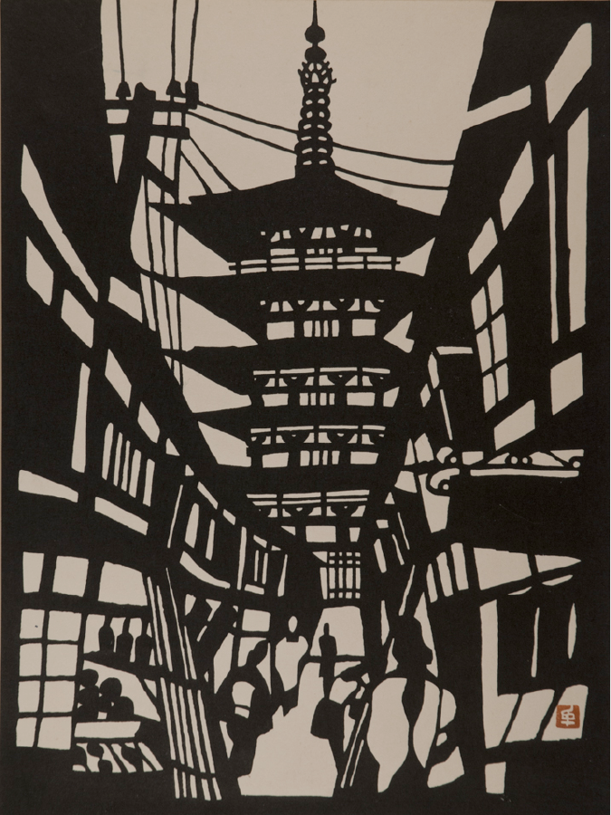

Welcome
Forging Alliances



Description
Art and literature played a key role in the dramatic rehabilitation of American relations with Japan and the Japanese in the years following World War II. Governmental, philanthropic, and educational institutions both within the US and in Japan encouraged authors to write about Japan and sponsored artists and exhibitions, all with the goal of encouraging new forms of connection and understanding between Americans and Japanese. Modern forms of fiction and of traditional Japanese arts — primarily woodblock printing and ceramics — were keys to building personal cultural ties between the United States and its recent enemy.
Penn State was a part of initiatives to foster American appreciation Japan and its arts. These projects left a material legacy in the form of modernist woodblock prints held by the Library and ceramics held by the College of Arts and Architecture. Many of these works are now part of the collections of the Palmer Museum of Art. This interdisciplinary course is organized to integrate the study of literature with a project research and exhibit these holdings of prints and pots. Faculty and students will work together to produce an educational exhibition of these works, which will be on display at the Palmer Museum of Art through the Spring 2014 semester.
OBJECTIVES
1. Gain a sophisticated knowledge of the cultural initiatives that, after World War II, helped shape the world we live in, and that have implications for global responses to war torn nations, from the Sudan to Iraq, today.
2. Understand Penn State’s role in these broad international movements.
3. Refine their skills for the effective communication of their knowledge by creating exhibition materials and by presenting their work in both written and oral form.
Fall 2013, T-Th 2:30-3:50 104 Chambers Bldg
Crosslisted as: ENG 404, JAPNS 425, ARTH 497B
Professor Jonathan Abel
EMAIL professor.abel@psu.edu
OFFICE HOURS T-Th 9-11
OFFICE LOCATION Burrowes 427
Professor Christopher Reed
EMAIL [email redacted]
OFFICE HOURS T-Th 4-5
OFFICE LOCATION Burrowes 220